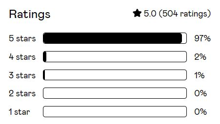

Simple Renaming

What is the Simple Renaming?
The Simple Renaming is an efficient and intuitive tool for batch renaming objects and data within Blender. Designed to streamline the renaming process, it ensures a straightforward and effortless workflow for organizing your project's assets. This tool is an essential addition to any project.
Support me on:
Video
Key Feature:
Renaming Features
- Advanced Name Replacement and Numbering: Effortlessly replace existing names with new ones across a variety of data types within Blender. This feature allows for the addition of optional sequential numbering, making it ideal for organizing and managing large sets of objects, materials, and other data elements.
- Add Prefixes/Suffixes: Append prefixes or suffixes to names effortlessly, or do so based on specific object types for orderly categorization.
- Numeration and Trimming: Number objects sequentially and trim names for a more organized, systematic approach.
- Rename Object Data after Object Name: Maintain consistency by renaming object data to match the corresponding object names.
- Powerful Search and Replace: Utilize a comprehensive search-and-replace function with case matching options, for precise renaming operations.
- Search and Select: Identify and select objects based on naming patterns, simplifying the renaming process.
Advanced Customization
- Versatile Data Renaming: Rename a wide array of elements, including objects, materials, collections, bones, mesh data, and their attributes like color, shape keys, UV maps, vertex groups, image textures, modifiers, actions, particle systems, and settings.
- Type-Specific Renaming: Limit renaming to specific object types, such as meshes, curves, empties, cameras, metaballs, light probes, and volume objects, for focused adjustments.
- Selective Renaming: Choose specifically which objects and data types are affected. Opt to apply renaming to all items or only those selected.
- Regex Support: Employ Regular Expressions for complex search and replace tasks, offering sophisticated control for advanced users.
- Sorting Options: Organize renaming based on selection, or spatial orientation (X, Y, Z-Axis), for better management and control.
- Variable Integration: Use custom strings or existing data as variables in renaming, such as basing names on object-, parent names, generating random strings. This allows for dynamic and context-sensitive naming.
User Experience and Interface Enhancements:
- Simple and Clean UI: An intuitive, uncluttered user interface for effortless navigation.
- Detailed Renaming Feedback: Get clear information on which objects were renamed and the nature of changes, ensuring transparency.
- Customizable Accessibility: Access the renaming panel in the viewport and outliner with customizable hotkeys, tailored to your workflow preferences.
Why the Simple Renaming?
- Time-Saving: Quicken your workflow by handling renaming tasks efficiently.
- Easy to Use: No complicated setups; start organizing your files right away.
- Adaptable to Your Needs: Whether it's a small task or a large project, this tool adjusts to your requirements.
- Regular Updates: I continuously improve the tool based on user feedback and Blender updates.
- Proven Track Record: Trusted by thousands of users, the Simple Renaming boasts a remarkable 97% 5-star rating on Gumroad, based on over 500 ratings. This level of user satisfaction and widespread adoption is a testament to its effectiveness and reliability.

Getting started
Download and Installation
You can download the Simple Renaming for blender 2.79 and blender 2.80 from the releases section here. Like any other Add-on, you can simply install it by going to File > User Preferences > Add-ons and click at the button Install from File . In the new opened window choose the .zip file of the addon and press Install from file . The Simple Renaming should now appear in your add-ons window and can be activated.

Once installed, you can use the auto updater in the user preferences to get the latest version of the addon.